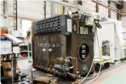
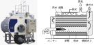
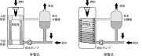
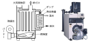

2023年
問題65 ボイラに関する次の記述のうち，最も不適当なものはどれか．
（1）鋳鉄製ボイラは，高温・高圧の蒸気の発生に適している．
（2）炉筒煙管ボイラは，直径の大きな横型ドラムを本体とし，燃焼室，煙管群で構成される．
（3）貫流ボイラは，水管壁に囲まれた燃焼室及び水管群からなる対流伝熱面で構成される．
（4）真空式温水発生器は，容量によらずボイラに関する取扱い資格は不要である．
（5）真空式温水発生器は，体内を真空に保持して水を沸騰させ，熱交換器に伝熱する．
2023年
問題65 正解（1） 頻出度AAA
鋳鉄製ボイラは，鋳鉄という材料の制約上，高温・高圧・大容量のものは製作できない．
鋳鉄製ボイラは，鋳鉄製のセクションを何台か組み合わせ，外部からボルトで締め付けた構造で，セクショナルボイラとも呼ばれる．分割搬入が可能で長寿命であるが，鋳鉄という材料の制約上，高温・高圧・大容量のものは製作できない．
また，構造上セクションの内部（缶水・蒸気部）の清掃が難しく，スケール付着防止のため復水・還水を利用した閉回路として設計・使用する（2023-65-1図参照）．

出典 株式会社前田鉄工所
https://www.maedatekkou.co.jp/vision/challenge/ を基に作成
-(2) 炉筒煙管ボイラ2023-65-2図参照．

左側写真 出典 株式会社ヒラカワ
https://www.hirakawag.co.jp/product/80/
-(3) 貫流ボイラは大容量と小容量で構造が大きく異なる．2023-65-3図に空調でよく用いられる小容量の単管式と多管式の貫流ボイラの概念図を示す．
貫流ボイラは大きなドラムを持たず，管で構成されているため耐圧性に優れ，保有水量も少ない（潜在的危険性が小さい）ので，他の構造のボイラに比べ法的な取扱い資格などが緩和されている．

出典 仙台市ガス局
https://www.gas.city.sendai.jp/biz/boilers/01/index.php を基に作成
-(4) ，-(5) 真空式温水発生機（2023-65-4図）は減圧蒸気室で蒸気の潜熱を熱交換に利用している．
真空式温水発生機並びに無圧式温水発生機（2023-65-5図）は労働安全衛生法の特定機械に該当せず，運転に特別な資格を要さない．

出典（写真） 株式会社前田鉄工所（MAEDA IRONWORKS CO.,LTD.）
https://www.maedatekkou.co.jp/product/rmo

出典（写真） 株式会社前田鉄工所（MAEDA IRONWORKS CO.,LTD.）
https://www.maedatekkou.co.jp/product/rkvmfv